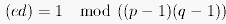
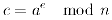
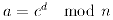
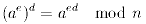
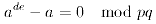

The data in the active document is encrypted using the RSA procedure which is accessed from the Encrypt with RSA dialog.
The Examples chapter provides an example which illustrates encryption and decryption using the RSA procedure.
The most well-known asymmetric cryptosystem, the RSA algorithm, was developed in 1977 by Ronald Rivest, Adi Shamir and Leonard Adleman. The private and public keys are constructed using two big prime numbers p and q which the user can specify himself but must keep secret. The user chooses two natural numbers e and d such that

The product of n=p×q and e then serves as the public key, n and d as the private key. For this encryption algorithm too the plaintext letters must first be converted to numbers. This is generally done using the ASCII code, but one can of course also agree on A=0, B=1, ..., Z=25. However, the number of each plaintext letter must be smaller than the product n. This becomes clear when one examines the encryption and decryption functions (a = plaintext letter, c = ciphertext letter):
 |
 |
Since in the modulo division one can also first determine the remainder from each factor in the division modulo n and then the rest of its product modulo n, it would not always be possible to obtain a unique ciphertext character if a could be bigger than n.
Cryptographically it is important of
The answer to the first question is definitely "Yes". If one uses a^d mod n for c in the encryption function, one obtains

From the properties of the variables one obtains a^(d×e) - a mod p = 0 and a^(d×e) - a mod q = 0. The different prime numbers p and q thus divide the same number. Therefore their product must also divide this number. It follows therefore that (a detailed proof can be found in the CT Book)

The second question, whether it is possible to work out the private key from the public key, can theoretically also be answered in the affirmative. But in fact no one has yet succeeded in calculating the private key when p and q are sufficiently large. However, the procedure for this is well known: since n is the product of two prime numbers, and e and d depend directly on these two prime numbers, it should be possible to identify the two prime numbers as one breaks n down into its prime factors, i.e. p and q. The normal way to establish the prime factors is to check all the prime numbers from 2 up to the square root of n to see whether they divide into n or not. But since n should be at least 300 digits long, this is a very time-consuming method. It took 600 people (or rather, their computers) eight months to factorise a 129-digit number in 1994! The CPU time required to factorise a 160-digit number was estimated in 1996 to be five years. Each of the two keys viewed on its own constitutes a trap door function (a trap door function is a mathematical function which is simple, i.e. does not require a lot of effort, to calculate, but whose inverse is extremely difficult to calculate).
If every letter is encrypted individually with the RSA algorithm, the analysis would ultimately be exactly the same as with each monoalphabetic substitution cipher. It would not be necessary to find out d in order to ascertain the original plaintext letter for every number. But since n is very big, many letters put together in blocks can be encrypted at once. This of course makes it ever more difficult to calculate the private key. To make analysis as difficult as possible, the variables d, e, p and q, for example, should be chosen so that they are sufficiently large, but with p and q differing by a significant amount.
However, as the encryption and decryption of texts using the RSA algorithm is relative time-consuming, it is generally only used today to encrypt the session key of a (symmetric) cipher during exchange or a digital signature. An exchange of keys must be encrypted with the public key, while a digital signature must be encrypted with the private key.